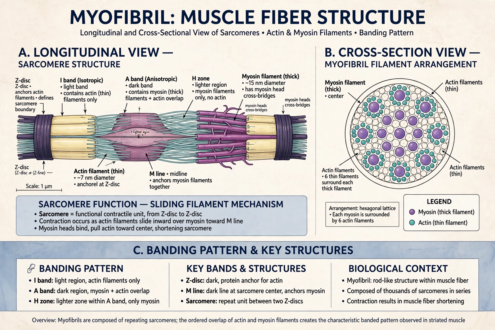

A myofibril (also known as a muscle fibril) is a basic rod-like organelle of a muscle cell. Skeletal muscles are composed of long tubular muscle cells (muscle fibres) containing many chains of myofibrils, each about 1–2 micrometres in diameter. Myofibrils are created during embryonic development in a process called myogenesis.

| Part of | Muscle fibre |
|---|---|
| Components | Sarcomeres, actin, myosin, titin |
Myofibrils are composed of repeating sections of sarcomeres, which appear under the microscope as alternating dark and light bands (giving striated muscle its name). A sarcomere extends between two Z-lines and contains thin actin filaments anchored at the Z-discs, thick myosin filaments in the A band, and the giant elastic protein titin. Other proteins include nebulin, tropomyosin and troponin, which regulate contraction.
According to the sliding filament theory, myosin heads hydrolyse ATP and pull actin filaments toward the sarcomere centre, shortening the muscle without the filaments themselves shortening. Calcium ions released from the sarcoplasmic reticulum bind troponin, exposing myosin-binding sites on actin. When stimulation ends, calcium is pumped back and the muscle relaxes.